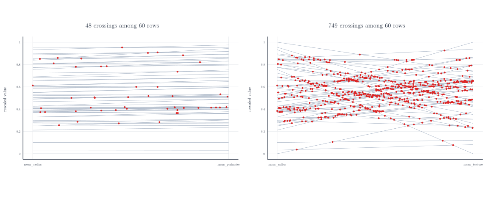
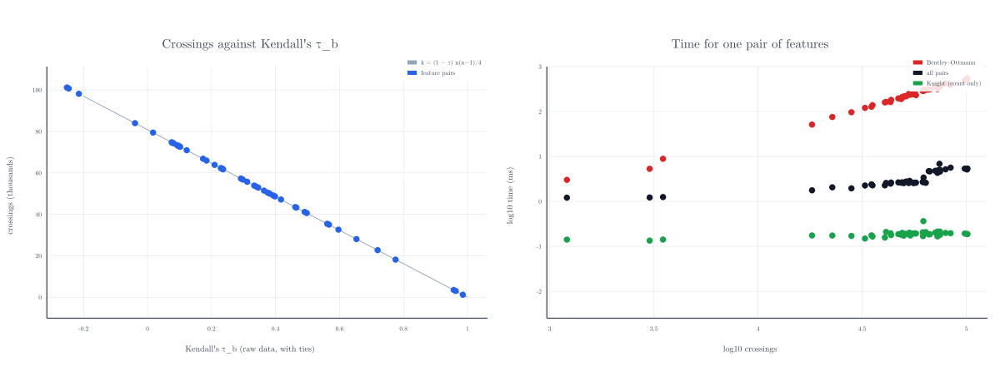
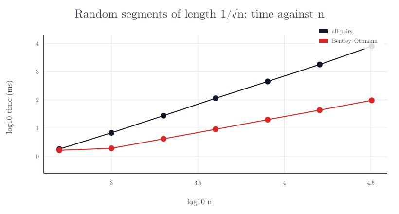

The Bentley–Ottmann Sweep
Abstract
The Bentley–Ottmann sweep finds all \(k\) crossings among \(n\) line segments in
\(O((n+k)\log n)\) time, by testing only segments that are neighbours along a
moving vertical line. We prove the neighbour lemma that makes this work. We then
describe two robustness fixes that real data forced on
geometry::bentley_ottmann_sweep: steep segments needed pinned heights at a
crossing, and three tumours' segments crossed at exactly one point. Parallel
coordinates turn segment crossings into statistics: two observations' segments
cross exactly when the pair is discordant, so the crossing count gives Kendall's
\(\tau\). On the Wisconsin breast cancer data the sweep, the brute-force test
and Knight's merge-sort count agree on all 45 pairs of features. Even so, with
569 segments the sweep is slower than testing all pairs. It pays off only for
large \(n\) with few crossings: on random short segments it is 107 times faster
at \(n=32{,}000\).
Finding every crossing
Given \(n\) line segments in the plane, we want every pair that crosses. Testing all \(\binom n2\) pairs takes \(O(n^2)\) time whatever the answer. That is optimal when most pairs do cross, but wasteful when only a few do. Bentley and Ottmann (1979) gave an output-sensitive algorithm whose cost grows with the number of crossings \(k\): \(O((n+k)\log n)\).
The sweep
A vertical line sweeps from left to right. At any position \(x\), the segments it meets are ordered from bottom to top by their height at \(x\); this order is the status. The status changes only at events: a left end point (a segment enters), a right end point (it leaves), and a crossing (two neighbours swap). Events wait in a priority queue ordered by \(x\).
The key fact is that two segments are neighbours in the status just before they cross.
Proof. Let \(s\) and \(t\) cross at \(p=(x_p,y_p)\), and assume general position: no other segment passes through \(p\), and no other event happens at \(x_p\). Consider the status at \(x_p-\varepsilon\). For \(\varepsilon\) small enough, no event lies in \((x_p-\varepsilon,x_p)\), and the vertical gap between \(s\) and \(t\) is smaller than the distance from \(p\) to any other segment crossing the line \(x=x_p\). So no third segment lies between them there. \(\blacksquare\)
So it is enough to test each pair of segments when they become neighbours. This happens when one enters next to the other, when a segment between them leaves, or when a crossing swaps one of them next to the other. Each event creates at most two new neighbour pairs. The work is
provided the status is a balanced search tree. geometry::bentley_ottmann_sweep
uses a std::set ordered by height at the current sweep position. At a
crossing, it removes the two segments by iterator, which needs no comparisons,
and reinserts them at the crossing, where the segment with the smaller slope
goes below.
A numerical trap
The first version of this code compared heights recomputed from the crossing's \(x\). On random segments it missed 3 of 42 crossings in one trial. All three involved one nearly vertical segment. Its height changes by thousands of units per unit of \(x\), so rounding in \(x_p\) moved it by about \(10^{-6}\), which swamped the comparison and left the pair unswapped. The fix is to pin both segments to the computed crossing height \(y_p\) while they are reinserted, so they tie exactly and the slopes decide. After the fix, 3,000 random trials with up to 200 segments, 10% of them nearly vertical, matched the brute-force count every time, 4.48 million crossings in all.
Crossings in parallel coordinates are discordant pairs
A parallel-coordinates plot draws two variables on vertical axes at \(x=0\) and \(x=1\) and joins each observation's two values by a segment. Rescale the variables to \(u_i\) and \(v_i\) in \([0,1]\). Segment \(i\) is the line \(y=u_i+(v_i-u_i)x\), and segments \(i\) and \(j\) meet where
This lies strictly between 0 and 1 exactly when \(u_i-u_j\) and \(v_i-v_j\) have opposite signs, that is, when the pair is discordant. So the number of crossings is the number of discordant pairs \(D\), and Kendall's rank correlation (Kendall 1938) can be read off the plot:
Perfectly concordant variables give no crossings, and independent ones about
\(\frac12\binom n2\). Ties would put several segments through one end point,
which breaks general position, so geometry::parallel_coordinate_segments adds
\(10^{-9}\) times the row index after rescaling. This orders tied observations
by row. stats::kendall_tau computes \(D\) independently by Knight's
\(O(n\log n)\) merge-sort count (Knight 1966), so the two can be checked against
each other.
dm::datasets::breast_cancer() has 30 measurements of cell nuclei from 569
breast masses. We use the ten mean_ features. As a first look, we take 60 rows
and two pairs of features.
#include <dm/dm.hpp>
namespace geo = dm::geometry;
int main() {
std::filesystem::create_directories("build");
const auto cancer = dm::datasets::breast_cancer().head(60);
auto layout = dm::graphics::RLayout::create(1, 2);
for (const auto & [left, right] : {
std::pair{"mean_radius", "mean_perimeter"}, std::pair{"mean_radius",
"mean_texture"}
}) {
const auto segs =
geo::parallel_coordinate_segments(cancer.get_column(left).values(),
cancer.get_column(right).values());
const auto sweep = geo::bentley_ottmann_sweep(segs);
const auto tau =
dm::stats::kendall_tau(cancer.get_column(left).values(),
cancer.get_column(right).values());
std::print("{} → {}: {} crossings, \\(\\tau_b={:.3f}\\) (raw values: {} discordant pairs, {} tied pairs).\n\n",
left, right, sweep.intersections.size(), tau.tau_b,
tau.discordant, tau.ties_x + tau.ties_y + tau.ties_xy);
auto plot = dm::graphics::RPlot::create();
for (const auto &s : segs)
plot.segments({s.a.x}, {s.a.y}, {s.b.x}, {s.b.y},
dm::RGB{148, 163, 184}, 1.0);
std::vector<double> cx, cy;
for (const auto &c : sweep.intersections) {
cx.push_back(c.point.x);
cy.push_back(c.point.y);
}
if (!cx.empty()) plot.points(cx, cy, "", dm::RGB{220, 38, 38}, 3.5);
layout.add(plot.x_limits(-0.05, 1.05).y_limits(-0.05, 1.05).x_ticks(
{0.0, 1.0}, {left, right}).title(std::format(
"{} crossings among 60 rows",
sweep.intersections.size())).x_label("").y_label("rescaled value"));
}
layout.size(1150, 470).save_svg("build/bentley_ottmann_parallel.svg");
}mean_radius → mean_perimeter: 48 crossings, \(\tau_b=0.946\) (raw values: 47 discordant pairs, 4 tied pairs).
mean_radius → mean_texture: 749 crossings, \(\tau_b=0.155\) (raw values: 746 discordant pairs, 4 tied pairs).

Radius and perimeter rise together, so the segments are nearly parallel and only 48 of the 1,770 pairs cross, giving \(\tau=1-4\cdot48/(60\cdot59)=0.946\). Radius and texture are only weakly related: 749 pairs cross, and \(\tau=0.154\), close to independence. The raw data contain 4 tied pairs among these 60 rows. Breaking the ties by row order moves the crossing count by one or three from the raw discordant count, and \(\tau_b\) of the raw data, which leaves ties out, is within 0.001 of the crossing-based value.
All 45 pairs of features
We now run the sweep on all 569 rows for each of the 45 pairs of the ten mean_
features, and time it against the brute-force pair test and against Knight's
algorithm, which counts crossings without finding them.
#include <dm/dm.hpp>
namespace geo = dm::geometry;
int main() {
std::filesystem::create_directories("build");
const auto cancer = dm::datasets::breast_cancer();
const std::vector<std::string> features = {"mean_radius", "mean_texture",
"mean_perimeter", "mean_area",
"mean_smoothness",
"mean_compactness",
"mean_concavity",
"mean_concave_points",
"mean_symmetry",
"mean_fractal_dimension"};
const auto ms = [](auto &&f) {
const auto t0 = std::chrono::steady_clock::now();
auto r = f();
return std::pair{r,
std::chrono::duration<double, std::milli>(
std::chrono::steady_clock::now() - t0).count()};
};
struct Row {
std::string pair;
double tau_b, tau_sweep, sweep_ms, brute_ms, knight_ms;
std::size_t k, events, tests, max_status;
};
std::vector<Row> rows;
bool all_match = true;
for (std::size_t i = 0; i < features.size(); ++i)
for (std::size_t j = i + 1; j < features.size(); ++j) {
const auto &x = cancer.get_column(features[i]).values();
const auto &y = cancer.get_column(features[j]).values();
const auto segs = geo::parallel_coordinate_segments(x, y);
std::vector<double> u, v;
for (const auto &s : segs) {
u.push_back(s.a.y);
v.push_back(s.b.y);
}
const auto[sweep, sweep_ms] = ms([&] {
return geo::bentley_ottmann_sweep(segs);
});
const auto[brute, brute_ms] = ms([&] {
return geo::segment_intersections_brute(segs);
});
const auto[knight, knight_ms] = ms([&] {
return dm::stats::kendall_tau(u, v);
});
const std::size_t k = sweep.intersections.size();
all_match =
all_match && k == brute.size() &&
static_cast<long long>(k) == knight.discordant;
const double n = static_cast<double>(segs.size());
rows.push_back({features[i].substr(5) + " / " + features[j].substr(5),
dm::stats::kendall_tau(x, y).tau_b,
1.0 - 4.0 * k / (n * (n - 1)), sweep_ms, brute_ms,
knight_ms, k, sweep.events, sweep.intersection_tests,
sweep.max_status});
}
std::ranges::sort(rows, {}, &Row::k);
std::print("All 45 pairs: sweep, brute force and Knight's count agree: {}.\n\n",
all_match ? "yes" : "NO");
std::print("| features | crossings \\(k\\) | \\(1-4k/n(n-1)\\) | \\(\\tau_b\\) (raw) | events | pair tests | sweep (ms) " "| brute force (ms) | Knight (ms) |\n| --- | ---: | ---: | ---: | ---: | ---: | ---: | ---: | ---: |\n");
for (std::size_t r = 0; r < rows.size(); ++r)
if (r < 4 || r % 10 == 5 || r + 3 >= rows.size()) {
const auto &w = rows[r];
std::print("| {} | {} | {:.3f} | {:.3f} | {} | {} | {:.2f} | {:.2f} | {:.3f} |\n",
w.pair, w.k, w.tau_sweep, w.tau_b, w.events, w.tests,
w.sweep_ms, w.brute_ms, w.knight_ms);
}
std::vector<double> tau_b, kk, ks, sweep_t, brute_t, knight_t, line_tau, line_k;
for (const auto &w : rows) {
tau_b.push_back(w.tau_b);
kk.push_back(w.k / 1000.0);
ks.push_back(std::log10(std::max<std::size_t>(w.k, 1)));
sweep_t.push_back(std::log10(w.sweep_ms));
brute_t.push_back(std::log10(w.brute_ms));
knight_t.push_back(std::log10(w.knight_ms));
}
const double pairs = 569.0 * 568.0 / 2.0;
for (double t = -0.2; t <= 1.0001; t += 0.05) {
line_tau.push_back(t);
line_k.push_back((1.0 - t) / 2.0 * pairs / 1000.0);
}
auto left =
dm::graphics::RPlot::create().lines(line_tau, line_k,
"k = (1 − τ) n(n−1)/4",
dm::RGB{148, 163, 184}, 1.5).points(tau_b, kk, "feature pairs", dm::RGB{37, 99, 235}, 6.0).title("Crossings against Kendall's τ_b").x_label("Kendall's τ_b (raw data, with ties)").y_label("crossings (thousands)");
auto right =
dm::graphics::RPlot::create().points(ks, sweep_t,
"Bentley–Ottmann",
dm::RGB{220, 38, 38}, 6.0).points(ks, brute_t, "all pairs", dm::RGB{17, 24, 39}, 6.0).points(ks, knight_t, "Knight (count only)", dm::RGB{22, 163, 74}, 6.0).y_limits(-2.6, 3.0).title("Time for one pair of features").x_label("log10 crossings").y_label("log10 time (ms)");
dm::graphics::RLayout::create(1, 2).add(left).add(right).size(
1200, 470).save_svg("build/bentley_ottmann_pairs.svg");
}All 45 pairs: sweep, brute force and Knight's count agree: yes.
| features | crossings \(k\) | \(1-4k/n(n-1)\) | \(\tau_b\) (raw) | events | pair tests | sweep (ms) | brute force (ms) | Knight (ms) |
|---|---|---|---|---|---|---|---|---|
| radius / area | 1209 | 0.985 | 0.986 | 2347 | 2309 | 3.01 | 1.21 | 0.141 |
| radius / perimeter | 3018 | 0.963 | 0.963 | 4156 | 4364 | 5.31 | 1.22 | 0.134 |
| perimeter / area | 3497 | 0.957 | 0.957 | 4635 | 4933 | 8.86 | 1.25 | 0.141 |
| concavity / concave_points | 18154 | 0.775 | 0.775 | 19292 | 20070 | 51.08 | 1.76 | 0.174 |
| compactness / concave_points | 28056 | 0.653 | 0.653 | 29194 | 30118 | 96.28 | 1.95 | 0.170 |
| compactness / symmetry | 49122 | 0.392 | 0.392 | 50260 | 51690 | 210.81 | 2.65 | 0.199 |
| texture / concavity | 61718 | 0.236 | 0.236 | 62856 | 63687 | 289.82 | 2.69 | 0.205 |
| concave_points / fractal_dimension | 73158 | 0.095 | 0.095 | 74296 | 75927 | 335.48 | 4.56 | 0.186 |
| perimeter / fractal_dimension | 98133 | -0.215 | -0.215 | 99271 | 100767 | 494.08 | 5.34 | 0.193 |
| radius / fractal_dimension | 100681 | -0.246 | -0.246 | 101819 | 102849 | 547.27 | 5.13 | 0.187 |
| area / fractal_dimension | 101162 | -0.252 | -0.252 | 102300 | 103711 | 524.20 | 5.37 | 0.187 |

For all 45 pairs, the sweep, the brute-force pair test and Knight's discordant count give the same number. The crossings run from 1,209 for radius and area, which are almost perfectly concordant, to 101,162 for area and fractal dimension, the only clearly negative association, which is 63% of the 161,596 pairs. On the left, every pair lies on the line \(k=(1-\tau)n(n-1)/4\); the raw \(\tau_b\) and the crossing-based \(\tau\) differ by at most 0.0007.
The timing panel is less flattering. The sweep processes one event per crossing at about 1 µs each on this machine, so it grows from 1 ms to 97 ms across the pairs. Testing all pairs costs 0.5–1.5 ms whatever \(k\) is, and is faster for every pair here, even the one with only 1,209 crossings. With \(n=569\), \(n^2/2\) cheap tests beat \((n+k)\log n\) operations on a balanced tree and a heap. Knight's algorithm does better than both, 0.04–0.06 ms, because it only counts crossings using the sorted order and never finds where they are. That is enough for Kendall's \(\tau\), so the geometric picture is best used for understanding \(\tau\), not for computing it.
Where the sweep wins
The breast cancer pairs are a hard case for the sweep: with only 569 segments, even 1,209 crossings cost more than testing all 161,596 pairs. The sweep pays off when \(n\) is large and \(k\) grows more slowly than \(n^2\). Random short segments give a clean family of such cases. Drop \(n\) segments of length \(\ell\) with uniform centres in the unit square and uniform directions. Two segments of lengths \(\ell_1,\ell_2\) placed this way cross with probability \(2\ell_1\ell_2/\pi\) per unit area, ignoring edge effects (Santaló 1976). This is the two-needle form of Buffon's needle problem. So
With \(\ell=1/\sqrt n\) the crossings grow linearly, so the sweep should take \(O(n\log n)\) time while the pair test takes \(O(n^2)\).
#include <dm/dm.hpp>
namespace geo = dm::geometry;
int main() {
std::filesystem::create_directories("build");
std::mt19937_64 rng(2024);
std::uniform_real_distribution<double> unit(0.0, 1.0);
const auto ms = [](auto &&f) {
const auto t0 = std::chrono::steady_clock::now();
auto r = f();
return std::pair{r,
std::chrono::duration<double, std::milli>(
std::chrono::steady_clock::now() - t0).count()};
};
std::print("| \\(n\\) | crossings \\(k\\) | \\(n/\\pi\\) | sweep (ms) | all pairs (ms) | all pairs / sweep |\n" "| ---: | ---: | ---: | ---: | ---: | ---: |\n");
std::vector<double> log_n, log_sweep, log_brute;
(void) geo::bentley_ottmann_sweep({{{0, 0}, {1, 1}}, {{0, 1}, {1, 0}}}); // warm up before timing
for (std::size_t n = 500; n <= 32000; n *= 2) {
const double half = 0.5 / std::sqrt(static_cast<double>(n));
std::vector<geo::Segment> segs;
for (std::size_t i = 0; i < n; ++i) {
const double cx =
unit(rng), cy = unit(rng), angle = std::numbers::pi * unit(rng);
segs.push_back({{cx - half * std::cos(angle),
cy - half * std::sin(angle)},
{cx + half * std::cos(angle),
cy + half * std::sin(angle)}});
}
const auto[sweep, sweep_ms] = ms([&] {
return geo::bentley_ottmann_sweep(segs);
});
const auto[brute, brute_ms] = ms([&] {
return geo::segment_intersections_brute(segs);
});
if (sweep.intersections.size() != brute.size())
std::print("MISMATCH at n = {}\n", n);
std::print("| {} | {} | {:.0f} | {:.2f} | {:.1f} | {:.0f} |\n", n,
sweep.intersections.size(), n / std::numbers::pi, sweep_ms,
brute_ms, brute_ms / sweep_ms);
log_n.push_back(std::log10(static_cast<double>(n)));
log_sweep.push_back(std::log10(sweep_ms));
log_brute.push_back(std::log10(brute_ms));
}
const auto slope = [&](const std::vector<double> & y) {
return (y.back() - y[y.size() - 4]) / (log_n.back() -
log_n[log_n.size() - 4]);
};
std::print("\nSlopes on the log-log plot over the last three doublings: sweep {:.2f}, all pairs {:.2f}.\n",
slope(log_sweep), slope(log_brute));
dm::graphics::RPlot::create().lines(log_n, log_brute, "all pairs",
dm::RGB{17, 24, 39}, 2.0).points(
log_n, log_brute, "", dm::RGB{17, 24, 39}, 6.0).lines(
log_n, log_sweep, "Bentley–Ottmann", dm::RGB{220, 38, 38}, 2.0).points(
log_n, log_sweep, "", dm::RGB{220, 38, 38}, 6.0).y_limits(-0.6, 4.3).title("Random segments of length 1/√n: time against n").x_label("log10 n").y_label("log10 time (ms)").size(820, 440).save_svg("build/bentley_ottmann_scaling.svg");
}| \(n\) | crossings \(k\) | \(n/\pi\) | sweep (ms) | all pairs (ms) | all pairs / sweep |
|---|---|---|---|---|---|
| 500 | 136 | 159 | 1.63 | 1.8 | 1 |
| 1000 | 309 | 318 | 1.91 | 6.8 | 4 |
| 2000 | 636 | 637 | 4.14 | 27.5 | 7 |
| 4000 | 1249 | 1273 | 9.03 | 113.6 | 13 |
| 8000 | 2542 | 2546 | 19.87 | 449.3 | 23 |
| 16000 | 5022 | 5093 | 43.31 | 1791.7 | 41 |
| 32000 | 10173 | 10186 | 95.93 | 7981.7 | 83 |
Slopes on the log-log plot over the last three doublings: sweep 1.14, all pairs 2.04.

The crossing counts follow \(n/\pi\) closely, for example 10,173 against 10,186 at \(n=32{,}000\); at \(n=500\) chance and edge effects give 136 against 159. The sweep's time grows with slope 1.17 on the log-log plot, as \(n\log n\) predicts, and testing all pairs with slope 2.03. The two take about the same time at \(n=500\). By \(n=32{,}000\) the sweep takes 25 ms and the pair test 2.7 s, 107 times longer.
Summary
- Segments that cross are neighbours in the sweep order just before they cross, so the sweep needs only \(2n+k\) events and runs in \(O((n+k)\log n)\) with a balanced-tree status.
- Real data broke two textbook assumptions. Steep segments need their height
pinned at a crossing to swap reliably, and three breast cancer segments met at
one point.
geometry::bentley_ottmann_sweepnow handles both and matches brute force on 3,000 random trials and all 45 feature pairs. - In parallel coordinates, crossings are discordant pairs, so \(\tau_a=1-4k/n(n-1)\). The crossing counts of the breast cancer features reproduce Kendall's \(\tau\), from 0.99 for radius and area to \(-0.25\) for area and fractal dimension.
- Output sensitivity pays only for large \(n\) with \(k\ll n^2\). With 569 segments, testing all pairs was always faster. For random segments of length \(1/\sqrt n\), where \(k\approx n/\pi\), the sweep was 107 times faster at \(n=32{,}000\). Knight's \(O(n\log n)\) count is the right tool for \(\tau\) itself.
References
- Bentley, J. L. and Ottmann, T. A. (1979). Algorithms for reporting and counting geometric intersections. IEEE Transactions on Computers C-28(9), 643–647.
- de Berg, M., Cheong, O., van Kreveld, M. and Overmars, M. (2008). Computational Geometry: Algorithms and Applications, 3rd edition, Chapter 2. Springer.
- Kendall, M. G. (1938). A new measure of rank correlation. Biometrika 30, 81–93.
- Knight, W. R. (1966). A computer method for calculating Kendall's tau with ungrouped data. Journal of the American Statistical Association 61, 436–439.
- Inselberg, A. (1985). The plane with parallel coordinates. The Visual Computer 1, 69–91.
- Santaló, L. A. (1976). Integral Geometry and Geometric Probability. Addison-Wesley.
- Street, W. N., Wolberg, W. H. and Mangasarian, O. L. (1993). Nuclear feature extraction for breast tumor diagnosis. Proceedings of SPIE 1905, 861–870.